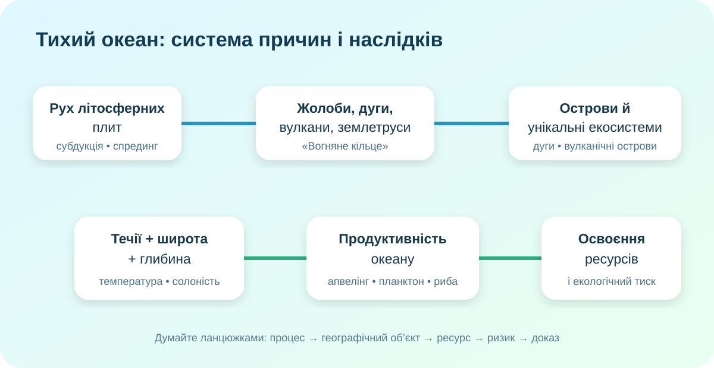

Гіпотеза до теорії
Оберіть твердження, яке здається Вам найсильнішим поясненням «винятковості» Тихого океану.
Спочатку — карта, а не підручник
OpenStreetMap. Збільшуйте масштаб і простежте узбережжя Азії, Австралії, Північної та Південної Америки.
Завдання А
Назвіть щонайменше 4 окраїнні моря Тихого океану й поясніть, чому більшість із них зосереджена біля західної окраїни.
Завдання Б
Знайдіть Маріанський жолоб, Японські острови, Гаваї та Нову Зеландію. Що спільного в їхньому положенні відносно океанічного басейну?
Чому тут стільки жолобів, вулканів і землетрусів?

Карта «Тихоокеанського вогняного кільця». Якщо зображення не завантажилося, відкрийте офіційний матеріал NOAA нижче.
У КТП є формулювання, яке треба перевірити
У рядку теми згадано «сучасні тектонічні процеси в межах Серединно-Атлантичного хребта». Але він розташований в Атлантичному океані. Для Тихого океану аналогічним прикладом зони розходження плит є Східно-Тихоокеанське підняття. Наука іноді починається не з відповіді, а з виявлення копіпасту, який тихенько прикинувся фактом.
Глибина — це не просто число

NOAA оцінює глибину Challenger Deep приблизно у 10 935 м. Середня глибина Світового океану — близько 3 682 м.
Розрахунок: у скільки разів Challenger Deep глибший за середню глибину океану? Округліть до десятих.
Острови: одна форма — різні причини


Поясніть різницю між острівною дугою, вулканічним островом гарячої точки та кораловим островом/атолом. Для кожного дайте по одному географічному прикладу.
Ресурсність ≠ безмежність

Оберіть два ресурси Тихого океану — наприклад рибні, енергетичні, мінеральні, рекреаційні — й для кожного запишіть вигоду, ризик виснаження/забруднення та спосіб контролю.
Побачити процес, а не лише схему
Перегляньте короткий матеріал NOAA про глибоководний вулканізм і «Ring of Fire». Випишіть один процес і один його географічний наслідок.
NOAA Ocean Today →Фінальний доказовий висновок
Теза: «Тихий океан знаменитий не окремими рекордами, а взаємодією тектоніки, циркуляції вод, біологічної продуктивності та людського освоєння».
Що треба зафіксувати
Тихий океан — найбільший і найглибший океан Землі. Його окраїни значною мірою збігаються з активними межами літосферних плит, тому тут багато жолобів, вулканів і землетрусів. Західна окраїна має особливо складну систему морів та острівних дуг. Ресурси океану великі, але їх освоєння створює ризики надмірного вилову, забруднення, деградації прибережних екосистем і конфліктів за шельфові ресурси.
Найглибша відома точка океану — Challenger Deep у Маріанському жолобі, приблизно 10,9 км нижче рівня моря. «Вогняне кільце» пов’язане передусім із субдукцією, тоді як Східно-Тихоокеанське підняття є прикладом спредингу.
Океанічний паспорт одного району
Оберіть один район: Маріанський жолоб, Гаваї, Великий Бар’єрний риф, узбережжя Перу або Японський архіпелаг. У 6–8 реченнях дайте: 1) координати/положення; 2) походження; 3) один ресурс; 4) одну екологічну проблему; 5) один доказ із карти або супутникового джерела.